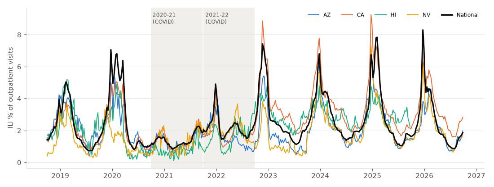
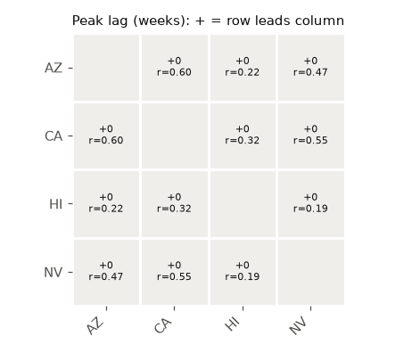
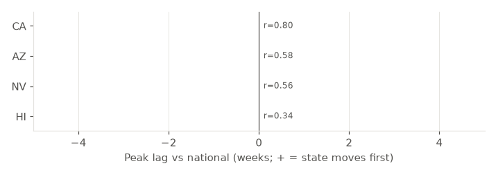

HHS Region 9: ILI lead/lag report
Findings
- Across 6 state pairs in HHS Region 9, 6 (100%) have their strongest week-over-week correlation at lag 0, i.e. they move in the same week. 0 pairs show a lead of 1 or more weeks (peak r ≥ 0.3 and at least 0.05 higher than at lag 0).
- The most tightly linked pair is AZ and CA (r = 0.60 at lag +0).
- Compared with national ILI, all 4 states move in the same week as the national curve (peak correlation at lag 0, r = 0.34 to 0.80).
- By seasonal peak timing (median over 6 non-COVID seasons), AZ peaks earliest (-1.0 weeks vs the national peak) and CA latest (+0.0 weeks).
- Robustness: excluding the 2020-21 and 2021-22 seasons changes the peak lag vs national for 0 of 4 states.
- Robustness: excluding the late-December/early-January holiday weeks changes the peak lag vs national for 0 of 4 states.
Data summary
Data notes: HI (included, but no data for 2025-26).
| State | Mean ILI % | Max ILI % | Week of max | Missing weeks |
|---|---|---|---|---|
| AZ | 2.05 | 6.83 | 2024-12-22 | 0 |
| CA | 2.72 | 9.25 | 2024-12-22 | 0 |
| HI | 2.20 | 5.19 | 2019-02-17 | 53 |
| NV | 1.79 | 7.32 | 2024-12-22 | 0 |

Lead/lag heatmap
Each cell compares the week-over-week change in ILI between two states at lags −4 to +4 weeks. The number is the lag with the highest correlation; +k means the row state's changes appear in the column state k weeks later.

Top pairs
| Pair | Peak lag (wk) | Peak r | r at lag 0 | Gain over lag 0 | Interpretation |
|---|---|---|---|---|---|
| AZ – CA | +0 | 0.602 | 0.602 | 0.000 | Move in the same week |
| CA – NV | +0 | 0.545 | 0.545 | 0.000 | Move in the same week |
| AZ – NV | +0 | 0.466 | 0.466 | 0.000 | Move in the same week |
| CA – HI | +0 | 0.323 | 0.323 | 0.000 | Move in the same week |
| AZ – HI | +0 | 0.220 | 0.220 | 0.000 | Move in the same week |
| HI – NV | +0 | 0.191 | 0.191 | 0.000 | Move in the same week |
Each state vs national

| State | Peak lag (wk) | Peak r | Peak lag excl. COVID seasons | Peak lag excl. holiday weeks | Median peak timing vs national (wk) |
|---|---|---|---|---|---|
| AZ | +0 | 0.581 | +0 | +0 | -1.0 |
| CA | +0 | 0.796 | +0 | +0 | +0.0 |
| HI | +0 | 0.342 | +0 | +0 | -0.5 |
| NV | +0 | 0.558 | +0 | +0 | -0.5 |
Method
Series: weighted ILI % per epiweek. Correlations use first differences (week-over-week change) so the shared winter seasonality does not dominate. r(k) = corr(ΔAt, ΔBt+k) for k ∈ [−4, +4]. A pair is called lead/lag only if the peak is at k ≠ 0, peak r ≥ 0.3, and peak r exceeds r at lag 0 by ≥ 0.05 (about one standard error of r at this sample size). Seasonal peaks are located on a 3-week centred rolling mean; peak-timing medians exclude 2020-21 and 2021-22. Holiday robustness masks MMWR weeks 51, 52, 53, 1, 2, when routine visits fall and ILI % jumps nationwide. The national series includes every state, so part of each state's lag-0 correlation with national is mechanical (largest for big states such as CA, TX, NY). These are associations in reported surveillance data, not evidence of transmission direction.